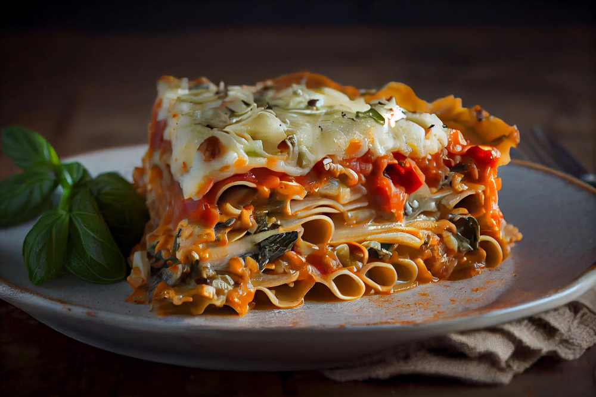

Lasagna

Ingredients
-
Ground beef - We used 80/20 beef (20% fat content)
for a juicier lasagna.
-
Onion - we use yellow onion, or sweet onion works
well
- Garlic cloves - you can add more if you love garlic
-
Red wine (or beef broth) - This amps up the flavor
of your sauce (avoid using cooking wine).
-
Marinara sauce - Use homemade marinara or
store-bought.
-
Dried thyme - Italian seasoning, basil, or oregano can be
substituted
- Sugar - balances the acidity of the tomatoes
- Parsley - flat-leaf or curly parsley works well
-
Lasagna noodles - Cook these al dente; they'll
continue to soften as the lasagna bakes.
-
Cottage cheese - adds great texture and moisture
- Ricotta cheese - we use low-fat or part-skim ricotta
-
Mozzarella cheese - An Italian cheese blend works,
but mozzarella is definitely the classic choice
- Egg - helps hold the cheese layer together
Directions
-
Brown the beef - Add oil to a deep pan and sautee
onion and beef until browned, 5 minutes then add garlic and stir
another minute.
-
Finish the sauce - Pour in 1/4 cup of wine and stir
until almost evaporated. Add marinara, salt, pepper, thyme, sugar,
and parsley; bring to a simmer, then cover and cook 5 minutes.
-
Make the cheese filling - Combine all of the cheese
sauce ingredients and 1 cup of mozzarella in a mixing bowl (reserve
the rest for later)./li>
-
Prep - Preheat your oven to 375ºF and cook the
lasagna noodles in a pot of well-salted water until al dente./li>
-
Assemble - Spread 1/2 cup of the meat sauce on the
bottom of a 9x13-inch casserole dish. Add 3 noodles, followed by 1/3
of the meat sauce, 1 cup of mozzarella, and half of the ricotta
mixture. Repeat, then for the top layer, add 3 noodles, 1/3 of the
meat sauce, and the remaining mozzarella.
-
Bake - Cover with foil and bake at 375˚F for 45
minutes, then remove the foil and broil for 3 to 5 minutes, or until
the cheese is lightly browned.
-
Rest - Let the lasagna rest for about 30 minutes
before cutting and serving.